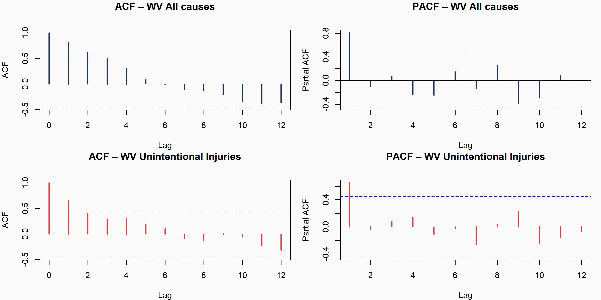
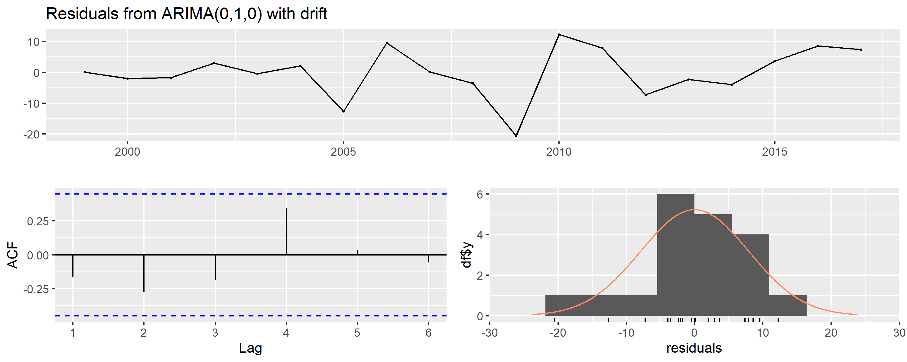

10 11. Modelo 1 – ARIMA
Con el perfil de West Virginia caracterizado en el estudio de caso, el paso siguiente es proyectar su trayectoria futura. Los objetivos del modelo predictivo son:
- Proyectar la tasa ajustada total de West Virginia hacia 2018–2022, el período posterior al horizonte de los datos.
- Proyectar específicamente la tasa de Unintentional injuries, la causa de mayor crecimiento y el indicador diferenciador clave del estado, cuya aceleración desde 2014 hace especialmente relevante anticipar su comportamiento futuro (Daugherty et al. 2019).
Se implementa un modelo ARIMA (Autoregressive Integrated Moving Average), estándar metodológico en epidemiología para series de tiempo de mortalidad (Shah et al. 2019), siguiendo tres pasos: evaluación de estacionariedad, identificación del orden óptimo, ajuste y proyección con intervalos de confianza.
10.1 11.1. Construcción de las series de tiempo
library(forecast)
library(tseries)
library(readr)
library(janitor)
library(stringr)
datos_limpios <- read_csv(
"NCHS_Leading_Causes.csv",
col_types = cols(.default = col_character())
) %>%
clean_names() %>%
mutate(
year = as.numeric(year),
state = str_trim(state),
deaths = as.numeric(gsub("\\.", "", deaths)),
age_adjusted_death_rate = as.numeric(
gsub(",", ".", gsub("\\.", "", age_adjusted_death_rate))
)
) %>%
filter(
state != "United States",
year >= 1999,
year <= 2017
)
# --- Serie 1: Tasa ajustada total – West Virginia ---
serie_wv_total <- datos_limpios %>%
filter(state == "West Virginia",
cause_name == "All causes",
!is.na(age_adjusted_death_rate)) %>%
arrange(year) %>%
pull(age_adjusted_death_rate)
ts_wv_total <- ts(serie_wv_total, start = 1999, frequency = 1)
# --- Serie 2: Tasa de Unintentional injuries – West Virginia ---
serie_wv_acc <- datos_limpios %>%
filter(state == "West Virginia",
cause_name == "Unintentional injuries",
!is.na(age_adjusted_death_rate)) %>%
arrange(year) %>%
pull(age_adjusted_death_rate)
ts_wv_acc <- ts(serie_wv_acc, start = 1999, frequency = 1)
cat("Serie All causes WV (1999–2017):\n"); print(round(serie_wv_total, 1))## Serie All causes WV (1999–2017):## [1] 1012.3 1011.1 1000.9 999.0 1003.1 973.0 965.1 947.5 954.2 964.3 947.7 933.6 953.2 939.3 923.8 929.1
## [17] 943.4 943.3 957.1##
## Serie Unintentional Injuries WV:## [1] 42.0 43.2 44.7 50.9 53.7 59.0 49.6 62.4 65.8 65.5 48.2 63.7 74.8 70.8 71.7 71.0 77.9 89.7 100.310.2 11.2. Prueba de estacionariedad – Dickey-Fuller Aumentada (ADF)
La hipótesis nula de la prueba ADF establece que la serie tiene raíz
unitaria (no estacionaria). Un valor-p < 0.05 permite rechazarla. Si la
serie resulta no estacionaria, auto.arima() aplica diferenciación
automáticamente (d ≥ 1).
library(kableExtra)
adf_total <- adf.test(ts_wv_total, alternative = "stationary")
adf_acc <- adf.test(ts_wv_acc, alternative = "stationary")
data.frame(
Serie = c("WV – All causes",
"WV – Unintentional injuries"),
`Estadístico ADF` = c(round(adf_total$statistic, 4),
round(adf_acc$statistic, 4)),
`Valor-p` = c(round(adf_total$p.value, 4),
round(adf_acc$p.value, 4)),
Resultado = c(
ifelse(adf_total$p.value < 0.05, "✔ Estacionaria", "✖ No estacionaria"),
ifelse(adf_acc$p.value < 0.05, "✔ Estacionaria", "✖ No estacionaria")
),
check.names = FALSE
) %>%
kable(
caption = "Prueba Dickey-Fuller Aumentada – Series de West Virginia",
align = c("l", "c", "c", "c")
) %>%
kable_styling(bootstrap_options = c("striped", "hover"),
full_width = FALSE, font_size = 12) %>%
row_spec(0, background = "#1D3557", color = "white", bold = TRUE)| Serie | Estadístico ADF | Valor-p | Resultado |
|---|---|---|---|
| WV – All causes | 0.0591 | 0.9900 | ✖ No estacionaria |
| WV – Unintentional injuries | -2.1609 | 0.5111 | ✖ No estacionaria |
10.3 11.3. ACF y PACF – identificación visual del orden
par(mfrow = c(2, 2), mar = c(4, 4, 3, 1), bg = "#FAFAFA")
acf(ts_wv_total, main = "ACF – WV All causes",
col = "#1D3557", lwd = 2)
pacf(ts_wv_total, main = "PACF – WV All causes",
col = "#1D3557", lwd = 2)
acf(ts_wv_acc, main = "ACF – WV Unintentional Injuries",
col = "#E63946", lwd = 2)
pacf(ts_wv_acc, main = "PACF – WV Unintentional Injuries",
col = "#E63946", lwd = 2)
Las funciones ACF y PACF permiten identificar la estructura de dependencia temporal: un corte abrupto en el PACF tras el lag 1 sugiere un componente ARIMA(1); un corte similar en el ACF, un MA(1). Estos patrones orientan la selección automática del modelo.
10.4 11.4. Selección automática del modelo
modelo_total <- auto.arima(ts_wv_total,
stepwise = FALSE,
approximation = FALSE,
trace = FALSE)
modelo_acc <- auto.arima(ts_wv_acc,
stepwise = FALSE,
approximation = FALSE,
trace = FALSE)
data.frame(
Serie = c("WV – All causes",
"WV – Unintentional injuries"),
Modelo = c(as.character(modelo_total),
as.character(modelo_acc)),
AIC = c(round(AIC(modelo_total), 2),
round(AIC(modelo_acc), 2)),
`Sigma²` = c(round(modelo_total$sigma2, 4),
round(modelo_acc$sigma2, 4)),
check.names = FALSE
) %>%
kable(caption = "Modelos ARIMA seleccionados por criterio AIC mínimo",
align = c("l", "c", "c", "c")) %>%
kable_styling(bootstrap_options = c("striped", "hover"),
full_width = FALSE, font_size = 12) %>%
row_spec(0, background = "#1D3557", color = "white", bold = TRUE)| Serie | Modelo | AIC | Sigma² |
|---|---|---|---|
| WV – All causes | ARIMA(0,1,0) | 146.70 | 181.5014 |
| WV – Unintentional injuries | ARIMA(0,1,0) with drift | 129.63 | 66.6085 |
##
## --- Resumen modelo All causes ---## Series: ts_wv_total
## ARIMA(0,1,0)
##
## sigma^2 = 181.5: log likelihood = -72.35
## AIC=146.7 AICc=146.95 BIC=147.59
##
## Training set error measures:
## ME RMSE MAE MPE MAPE MASE ACF1
## Training set -2.851984 13.11292 10.73749 -0.2992174 1.124755 0.9520927 -0.08201026##
## --- Resumen modelo Unintentional injuries ---## Series: ts_wv_acc
## ARIMA(0,1,0) with drift
##
## Coefficients:
## drift
## 3.2389
## s.e. 1.8695
##
## sigma^2 = 66.61: log likelihood = -62.82
## AIC=129.63 AICc=130.43 BIC=131.41
##
## Training set error measures:
## ME RMSE MAE MPE MAPE MASE ACF1
## Training set 0.002040057 7.719914 5.733619 -1.349817 9.382562 0.8480291 -0.161940810.5 11.5. Diagnóstico de residuos
par(mfrow = c(1, 2), bg = "#FAFAFA")
checkresiduals(modelo_total, plot = TRUE, main = "Residuos – WV All causes")
##
## Ljung-Box test
##
## data: Residuals from ARIMA(0,1,0)
## Q* = 2.3798, df = 4, p-value = 0.6663
##
## Model df: 0. Total lags used: 4
##
## Ljung-Box test
##
## data: Residuals from ARIMA(0,1,0) with drift
## Q* = 6.3866, df = 4, p-value = 0.1721
##
## Model df: 0. Total lags used: 4Los residuos de ambos modelos se comportan como ruido blanco: oscilan alrededor de cero sin patrones, la ACF no muestra autocorrelación significativa y el histograma se aproxima a una distribución normal. La prueba de Ljung-Box confirma esto con un p-value de 0.6663, muy por encima de 0.05.
10.6 11.6. Proyecciones ARIMA – West Virginia (2018–2022)
library(patchwork)
horizonte <- 5
pred_total <- forecast(modelo_total, h = horizonte, level = c(80, 95))
pred_acc <- forecast(modelo_acc, h = horizonte, level = c(80, 95))
# Función para construir data frames de pronóstico
build_fc <- function(serie_orig, pred_obj, inicio) {
anios_hist <- seq(inicio, inicio + length(serie_orig) - 1)
anios_fut <- seq(inicio + length(serie_orig),
inicio + length(serie_orig) + horizonte - 1)
list(
hist = data.frame(year = anios_hist,
valor = as.numeric(serie_orig)),
fut = data.frame(year = anios_fut,
valor = as.numeric(pred_obj$mean),
lo80 = as.numeric(pred_obj$lower[, 1]),
hi80 = as.numeric(pred_obj$upper[, 1]),
lo95 = as.numeric(pred_obj$lower[, 2]),
hi95 = as.numeric(pred_obj$upper[, 2]))
)
}
d_tot <- build_fc(serie_wv_total, pred_total, 1999)
d_acc <- build_fc(serie_wv_acc, pred_acc, 1999)
# ── Gráfico 1 – Tasa total ────────────────────────────────────────────────
p1 <- ggplot() +
geom_ribbon(data = d_tot$fut,
aes(x = year, ymin = lo95, ymax = hi95),
fill = "#A8DADC", alpha = 0.35) +
geom_ribbon(data = d_tot$fut,
aes(x = year, ymin = lo80, ymax = hi80),
fill = "#457B9D", alpha = 0.40) +
geom_line(data = d_tot$hist,
aes(x = year, y = valor),
color = "#1D3557", linewidth = 1.3) +
geom_point(data = d_tot$hist,
aes(x = year, y = valor),
color = "#1D3557", size = 2) +
geom_line(data = d_tot$fut,
aes(x = year, y = valor),
color = "#457B9D", linewidth = 1.3, linetype = "dashed") +
geom_point(data = d_tot$fut,
aes(x = year, y = valor),
color = "#457B9D", size = 3, shape = 17) +
geom_vline(xintercept = 2017.5, linetype = "dotted",
color = "gray50", linewidth = 0.8) +
annotate("text", x = 2017.7,
y = max(d_tot$hist$valor) * 0.99,
label = "→ Proyección", hjust = 0,
color = "gray40", fontface = "italic", size = 3.5) +
scale_x_continuous(breaks = seq(1999, 2022, by = 2)) +
scale_y_continuous(labels = comma) +
labs(title = "Proyección ARIMA – Tasa ajustada total (All causes)",
subtitle = "West Virginia · Horizonte 2018–2022",
x = "Año", y = "Tasa por 100,000 hab.",
caption = "Bandas: IC 80% (oscuro) e IC 95% (claro)") +
theme_minimal(base_size = 12) +
theme(plot.title = element_text(face = "bold", hjust = 0.5),
plot.subtitle = element_text(hjust = 0.5, color = "gray40"),
axis.text.x = element_text(angle = 45, hjust = 1),
panel.grid.minor = element_blank())
# ── Gráfico 2 – Unintentional injuries ───────────────────────────────────
p2 <- ggplot() +
geom_ribbon(data = d_acc$fut,
aes(x = year, ymin = lo95, ymax = hi95),
fill = "#FFCDD2", alpha = 0.40) +
geom_ribbon(data = d_acc$fut,
aes(x = year, ymin = lo80, ymax = hi80),
fill = "#E63946", alpha = 0.35) +
geom_line(data = d_acc$hist,
aes(x = year, y = valor),
color = "#B71C1C", linewidth = 1.3) +
geom_point(data = d_acc$hist,
aes(x = year, y = valor),
color = "#B71C1C", size = 2) +
geom_line(data = d_acc$fut,
aes(x = year, y = valor),
color = "#E63946", linewidth = 1.3, linetype = "dashed") +
geom_point(data = d_acc$fut,
aes(x = year, y = valor),
color = "#E63946", size = 3, shape = 17) +
geom_vline(xintercept = 2017.5, linetype = "dotted",
color = "gray50", linewidth = 0.8) +
annotate("text", x = 2014,
y = min(d_acc$hist$valor) * 1.04,
label = "Aceleración\ndesde 2014",
color = "#B71C1C", fontface = "bold", size = 3.3) +
annotate("segment", x = 2014, xend = 2014,
y = min(d_acc$hist$valor) * 1.10,
yend = d_acc$hist$valor[d_acc$hist$year == 2014] * 0.98,
arrow = arrow(length = unit(0.2, "cm")), color = "#B71C1C") +
scale_x_continuous(breaks = seq(1999, 2022, by = 2)) +
scale_y_continuous(labels = comma) +
labs(title = "Proyección ARIMA – Unintentional Injuries",
subtitle = "West Virginia · La causa de mayor crecimiento y mayor riesgo proyectado",
x = "Año", y = "Tasa por 100,000 hab.",
caption = "Bandas: IC 80% (oscuro) e IC 95% (claro)") +
theme_minimal(base_size = 12) +
theme(plot.title = element_text(face = "bold", hjust = 0.5),
plot.subtitle = element_text(hjust = 0.5, color = "gray40"),
axis.text.x = element_text(angle = 45, hjust = 1),
panel.grid.minor = element_blank())
p1 / p2
Las proyecciones muestran trayectorias divergentes. All causes se mantiene estable alrededor de 957 por 100,000 habitantes, reflejando que West Virginia mejora pero sin cerrar la brecha con la media nacional. Unintentional injuries continúa su crecimiento acelerado, proyectando superar 120 por 100,000 hacia 2022, consecuencia directa de la epidemia de opioides no resuelta. Ambos modelos deben interpretarse como indicadores de dirección de tendencia, con mayor confiabilidad en el corto plazo.
10.7 11.7. Tabla de valores proyectados
data.frame(
`Año` = 2018:2022,
`WV total (pred.)` = round(as.numeric(pred_total$mean), 1),
`IC 95% inf. (total)` = round(as.numeric(pred_total$lower[, 2]), 1),
`IC 95% sup. (total)` = round(as.numeric(pred_total$upper[, 2]), 1),
`Unint. Inj. (pred.)` = round(as.numeric(pred_acc$mean), 1),
`IC 95% inf. (Unint.)` = round(as.numeric(pred_acc$lower[, 2]), 1),
`IC 95% sup. (Unint.)` = round(as.numeric(pred_acc$upper[, 2]), 1),
check.names = FALSE
) %>%
kable(
caption = "Valores proyectados por ARIMA – West Virginia (2018–2022)",
align = rep("c", 7)
) %>%
kable_styling(bootstrap_options = c("striped", "hover"),
full_width = TRUE, font_size = 11) %>%
row_spec(0, background = "#1D3557", color = "white", bold = TRUE) %>%
add_header_above(
c(" " = 1,
"Tasa ajustada – All causes" = 3,
"Tasa ajustada – Unintentional injuries" = 3),
background = "#457B9D", color = "white", bold = TRUE
)| Año | WV total (pred.) | IC 95% inf. (total) | IC 95% sup. (total) | Unint. Inj. (pred.) | IC 95% inf. (Unint.) | IC 95% sup. (Unint.) |
|---|---|---|---|---|---|---|
| 2018 | 957.1 | 930.7 | 983.5 | 103.5 | 87.5 | 119.5 |
| 2019 | 957.1 | 919.8 | 994.4 | 106.8 | 84.2 | 129.4 |
| 2020 | 957.1 | 911.4 | 1002.8 | 110.0 | 82.3 | 137.7 |
| 2021 | 957.1 | 904.3 | 1009.9 | 113.3 | 81.3 | 145.2 |
| 2022 | 957.1 | 898.1 | 1016.1 | 116.5 | 80.7 | 152.3 |
El modelo ARIMA proyecta que la tendencia observada entre 1999 y 2017 continuará, aunque a un ritmo más moderado. Los intervalos de confianza son amplios, algo esperable porque la serie solo incluye 19 observaciones anuales. Este resultado coincide con lo encontrado en la sección 9.3: West Virginia muestra una mejora gradual, pero sigue sin acercarse al promedio nacional y no parece que vaya a alcanzarlo pronto.
Unintentional injuries es la proyección con mayores implicaciones para la política pública. El modelo captura la aceleración estructural iniciada en 2014 vinculada a la epidemia de sobredosis de opioides documentada en la sección 9.1.1 y la proyecta hacia 2018–2022. Si las condiciones estructurales persisten, la tasa de lesiones no intencionales en West Virginia continuará creciendo, consolidando la brecha ya identificada respecto al promedio nacional y al resto de los estados del Clúster 3.